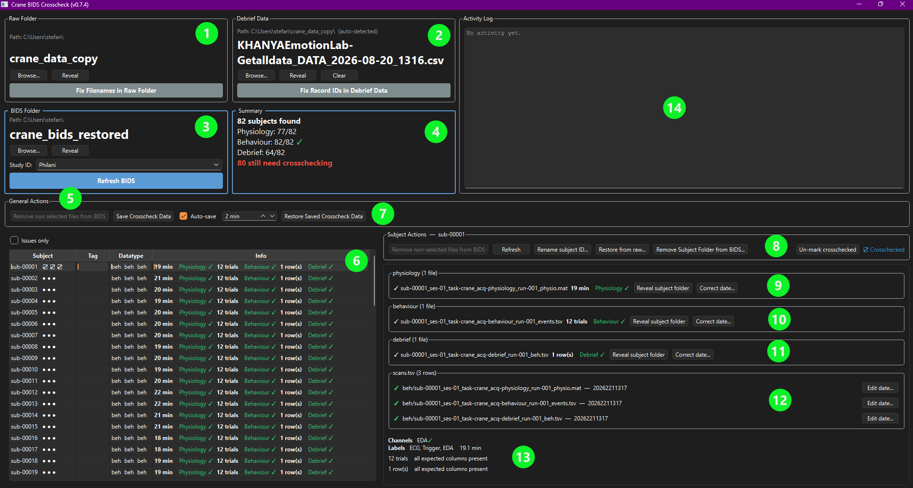

Crane Crosscheck
This is step 1: before your data can be processed, your raw recordings need to be converted into BIDS and crosschecked. This page is for anyone using the Crane Crosscheck tool to do that — no coding background needed. It works the same way as FOH Crosscheck (same underlying tool, same "raw folder is never touched" guarantee), just for Crane's data instead of FOH's. If you haven't already, read Crosschecking first — it covers what crosschecking means and why it matters in general; this page picks up from there with what's specific to Crane and the actual walkthrough. If you've already used FOH Crosscheck, most of this will feel familiar.
The raw folder is never changed — not once, not ever
Worth repeating here: nothing on this page ever writes to, renames, or deletes anything in your raw folder. See Crosschecking for the full explanation of why that's safe.
Why this matters for Crane specifically
Crane sessions are recorded live, with real participants, real equipment, and real interruptions — a recording might get restarted after a false start, a laptop might reconnect mid-session and create a second file, a filename might come out with the wrong subject id typed into it, or a test recording might end up saved in the same folder as the real one. Crane also combines three separate file types per subject — a physiology recording, a behaviour file, and a debrief (questionnaire) export — each of which can independently go missing, duplicate, or mismatch. None of that is unusual, and none of it is something a computer program can safely sort out on its own — it takes a person who can look at when a recording happened, how long it ran, and what it actually contains, and make the call.
Left undone, this kind of ambiguity doesn't cause an obvious error later — it causes silent problems: an analysis quietly running on a test file, or on an earlier, incomplete attempt, with no error message anywhere to catch it. Crosschecking front-loads that judgment call once, on purpose, instead of leaving it to chance.
Going further
An interactive, hands-on QC tool (distinct from crosschecking — see Crosschecking: How this is different from QC) is also being planned for Crane; see Interactive QC Plan.
The window, at a glance
With the toolbox installed (see Getting Started if you haven't done this yet), open a terminal and type:
vrlab_crane_bids_crosscheck
The tool remembers the last BIDS folder you had open, so after your first time using it, it'll usually open straight to where you left off.
Everything the tool can do lives in one of the 14 numbered panels below — this screenshot is the map, and the numbered sections after it walk through each panel in the order you'd naturally use them, so there's only one explanation of each part of the window rather than two.

Not sure what a button or icon does?
Hover your cursor over any icon or button in the tool — a short tooltip explains what it does before you click it.
1. Raw Folder
Click Browse... and select the folder your raw Crane recordings actually land in. Reveal opens that folder in your system's file browser (Explorer on Windows, Finder on macOS) — handy if you want to look at what's actually in there yourself.
Every raw physiology/behaviour file's subject id is normally read straight
from its filename. Occasionally that fails outright, or it succeeds but
lands on the wrong id — most often because of a (N) marker at the end,
which is ambiguous on its own: it could mean a harmless second copy of the
same recording, or two genuinely different subjects who happen to share a
base id. Click "Fix Filenames in Raw Folder" to see every raw file,
with a "Currently resolves to" column showing the subject id it
currently maps to (or "(unparseable)", in red, if it doesn't resolve
at all). Click a row to see, in the details pane below the table,
plain-English reasoning for why it failed (or what it resolves to if it
didn't), plus any matching line from the last time you ran Refresh
BIDS. Type the correct subject id into "Corrected subject id" for
any row that's wrong, then click Save. This never renames the raw
file itself — only what the next Refresh BIDS run resolves that
filename to.
2. Debrief Data
Point this at your REDCap questionnaire export — it's usually auto-detected, but click Browse... to pick a different file, or Clear to go back to auto-detection. Reveal opens its containing folder, same as panel 1.
Crane's debrief data comes from a REDCap export with a record_id column
that's supposed to be the subject's id — but since it's typed in by hand,
it sometimes doesn't quite match: stray spaces, a spurious .0 on the
end, a missing dash, or two different subjects who both happened to type
the same id. Click "Fix Record IDs in Debrief Data" to see every
record_id that doesn't cleanly match a known subject, or that's shared
by more than one row (each occurrence gets its own row here, labelled "1
of 2", "2 of 2", etc., so you can tell them apart). For each row:
- record_id (from export) — the value as it actually appears in the export, unchanged.
- Matched — a quick ✓/✗ showing whether the id currently typed in the next column matches a subject who's still missing a debrief file.
- Corrected subject id — type the real subject id here. Rows that
aren't shared with another row are pre-filled with a best-effort guess
(whitespace trimmed, that spurious
.0removed); rows sharing arecord_idwith another are left blank on purpose, since guessing the same subject for both would just recreate the ambiguity — you need to assign each one individually.
Leave a box blank to skip that row — it's fine for a subject to genuinely have no debrief data (e.g. they never completed the questionnaire). Click Save once every row you care about is filled in. Like panel 1's fix, this never touches the raw export — corrections are saved separately and applied the next time you click Refresh BIDS.
3. BIDS Folder
If nothing loads automatically, click Browse... and select your Crane BIDS folder. This is the folder every other panel actually works with — raw Crane files aren't already BIDS-shaped, so this tool always crosschecks a separate BIDS folder, building it from your raw folder on request rather than working on the raw folder directly.
Study ID is a short label for this study, saved inside the BIDS folder and remembered next time you open it — it's what names your saved crosscheck data (panels 5 and 7 below), so a backup stays identifiable. Pick an existing one from the dropdown if you're pointing the tool at a different copy of a study you've already worked on.
Click Refresh BIDS to build/update your BIDS folder from what's in the raw folder (and debrief export). This copies every subject not already in your BIDS folder across; subjects already imported are never re-copied, overwritten, or even looked at again, so a crosscheck decision you've already made can never be clobbered by re-running this. Safe to click any time, including repeatedly — there's no harm in clicking it and finding nothing new.
4. Summary
A quick read on the folder's overall state: total subject count, how many recordings were found per scan type, and, in bold red, how many subjects still need crosschecking (i.e. haven't been marked ☑ for every scan type). That count disappears once everyone's been reviewed.
5. General Actions
Bulk actions that work across every subject at once:
- Remove non-selected files from BIDS — commits every pending pick at once (see panels 9–11 below for picking one). Enabled only once you have pending picks; its label counts them so you can see at a glance whether there's anything to save.
- Save Crosscheck Data — copies this BIDS folder's recorded decisions into the app's own local data folder, named after the Study ID from panel 3 — no folder to pick. Together with your raw folder (already safe), this is enough to recreate a fully crosschecked BIDS folder with Restore Saved Crosscheck Data (panel 7) if this one is ever lost or corrupted.
- Auto-save — does the same thing as Save Crosscheck Data automatically, on the interval shown next to it, without a popup — results show up in the Activity Log (panel 14) instead.
Removing files this way has no in-app undo
Once you click Remove non-selected files from BIDS, the non-picked candidates are deleted from BIDS — still completely safe in your raw folder, which this tool never touches, but there's no one-click bulk restore for it inside the app. See panel 8 below for the one kind of undo that is built in (per subject), and Backing up, and rebuilding after a lost BIDS folder for how a saved backup helps here too.
6. Subject list
One row per subject, with a small icon (or icons) next to each one telling you, at a glance, whether it needs your attention:
| Icon | Meaning |
|---|---|
| ● | Fine — exactly one recording found, nothing to do. |
| ○ | Missing — no recording found at all for this scan type. |
| ⚠ | Needs a decision — more than one recording was found. |
| ⏳ | You've picked one, but haven't saved that choice yet. |
| ☑ | You've personally reviewed and approved this one. |
Tick Issues only above the list to hide every subject that's already fine, so you only see the ones that need a decision. Click a subject to select it, or Ctrl-click (or Shift-click for a range) to select several at once — see Working with several subjects at once below for what changes when you do.
7. Restore Saved Crosscheck Data
If the BIDS folder itself is ever lost or corrupted: point the tool at a fresh, empty BIDS folder with the same Study ID as before, and click this. It re-imports fresh from your raw folder, then automatically replays every past pick, correction, and reviewed mark from your saved data (panel 5) — you don't redo any of it by hand. It's only meant for a BIDS folder that's empty or was just freshly created, not for merging saved data into one that already has its own, different state.
8. Subject Actions
Actions that apply to whichever subject (or subjects) is selected on the left. It stays visible at a fixed spot regardless of what's selected — blank when nothing is selected, and titled with the subject's ID when exactly one is, so there's no jumping around or losing track of who it applies to as you click between subjects.
- Remove non-selected files from BIDS — the same commit action as panel 5, scoped to just this subject.
- Refresh — re-reads this subject's info from disk, ignoring the cached copy — useful if a recording has changed since the tool last looked.
- Rename subject ID... — corrects a wrong subject id, renaming the
sub-<id>folder and every file inside it to match. - Restore from raw... — the one built-in undo: clears this subject's crosscheck bookkeeping (a committed duplicate pick, most often), so the next Refresh BIDS re-derives their whole record fresh from the raw folder. Because it re-derives the whole folder, any other decision already made for them (a corrected date, a crosschecked mark, another scan type's pick) goes with it and needs redoing too. This only works for a subject still visible in the list — not one removed entirely (see below).
- Remove Subject Folder from BIDS... — deletes the subject's entire folder from BIDS (their raw recording is untouched) and asks for an optional reason first, so it's clear later why they were removed. This one has no in-app undo at all — see the warning in panel 5.
- Mark crosschecked — records that you've personally reviewed this subject, for every scan type at once — shown afterwards as a ☑ next to their name in the subject list. This is a manual note for your own or your team's reference; it doesn't change anything else. Click the same button again ("Un-mark crosschecked") to remove the mark.
Didn't get to finish?
If you close the tool with picks still pending (still showing the ⏳ icon), that's fine — they aren't lost. The tool remembers them and they'll still be there, still pending, next time you open it.
9–11. Physiology, behaviour, and debrief detail
Whichever subject is selected shows full detail for each of their three file types here, one panel each. If there's more than one candidate recording for a scan type, you'll see each one listed with its own date and length side by side, so you can compare them directly.
- Pick the right recording — click the button next to the correct candidate. This doesn't save anything yet — it's a preview, marked with the ⏳ icon, so you can change your mind before committing to it with panel 5 or 8's "Remove non-selected files from BIDS."
- Reveal subject folder — opens this subject's folder, inside your BIDS folder, in your system's file browser.
- Correct date... — rewrites this file's recorded acquisition date
(in
scans.tsv, panel 12) if it doesn't match when the recording actually happened.
What about a wrong filename?
Crane's raw-to-BIDS step already writes real BIDS filenames itself, so
there's no manual filename-fixing button here the way panel 1's "Fix
Filenames in Raw Folder" works on raw files. A stray -dup2 (or
-dup3, ...) marker left over from two raw files landing on the same
name is cleaned up automatically the moment you resolve the
duplicate — nothing left for you to fix by hand.
12. scans.tsv
The BIDS bookkeeping file listing every scan for this subject, with its recorded date. Edit date... next to any row lets you correct that scan's date directly, without needing to select its file as a candidate first (panels 9–11).
13. Channels/Labels
A quick read on data completeness for whichever recording currently counts as "the one": channels found (physiology), trial count and whether every expected column was present (behaviour/debrief) — so you don't have to open a file yourself to get a sense of whether it's usable.
14. Activity Log
A running record of everything the tool has done this session — what Refresh BIDS found, when auto-save last ran, and so on.
Working with several subjects at once
Select more than one subject in the list (panel 6) and panel 8 switches from Subject Actions to a Group Actions panel: bulk versions of the same buttons, scoped to your selection — Remove non-selected files from BIDS for selected, Refresh, Mark selected crosschecked / Un-mark selected crosschecked, Restore selected from raw..., and Remove selected from BIDS....
Two things stay single-subject only, on purpose:
- Renaming a subject's ID — renaming several different subjects to the same new ID wouldn't make sense.
- Picking which recording is the right one for a subject with more than one candidate — that judgement call always stays in the per-subject recording panel (9–11), never a bulk action. A subject still waiting on that pick is simply skipped by any bulk action that needs an actual file to work with.
Backing up, and rebuilding after a lost BIDS folder
This is the payoff of the rule at the top of this page — the raw folder is never touched — spelled out concretely: everything in your BIDS folder is either raw data (already safe, and reproducible any time by re-running "Refresh BIDS") or bookkeeping this tool writes as you work. Only that bookkeeping is unique and worth backing up on its own — see panels 5 and 7 above (Save Crosscheck Data / Restore Saved Crosscheck Data) for how, keyed automatically to this BIDS folder's Study ID.
Save Crosscheck Data/Restore Saved Crosscheck Data for Crane also cover the two raw-side correction files from panels 1 and 2 (Fix Filenames in Raw Folder / Fix Record IDs in Debrief Data) automatically, since a rebuild needs them in place before Refresh BIDS runs, not just the decisions made afterward.
Next: Process Your Data — step 2, once your data's the right files in the right place.
Also see: FOH Crosscheck for the equivalent tool for FOH data, BIDS Crosscheck Plan for the original design decisions behind this tool, and BIDS Crosscheck: Architecture if you're looking to change how it works rather than just use it.